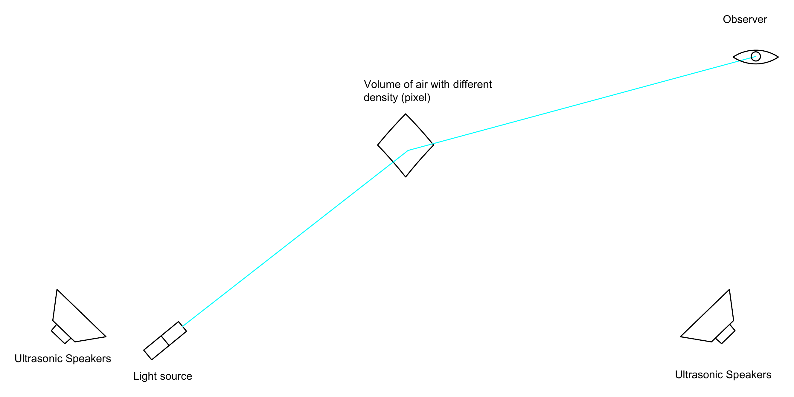
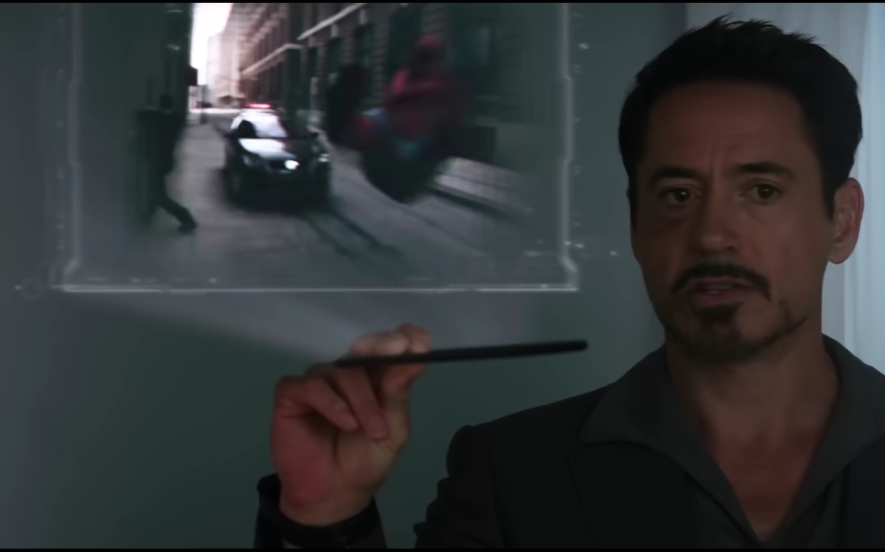
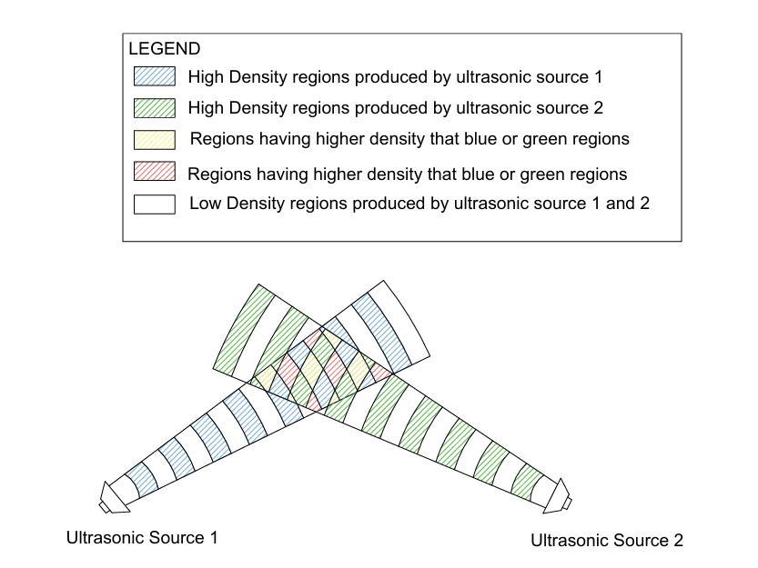

Opto-Acoustic Modulation: Mid-Air Volumetric Display via Ultrasonic Refractive-Index Gradients
Introduction
This is another concept I spended a lot of my mental energy on, In brief I was trying to make 3d volumetric displays that could create true 3d images floating in air without requiring reflectors, panels, or wearing any bulky glasses.
The main aim was to create actual “pixels in air” that multiple people can view naturally from different angles. This writeup documents the basic idea, how I arrived at it independently, the technical challenges, and the detailed feasibility calculations to see whether current physics and hardware can actually pull this off.
Inspiration
Another peice of Science Fiction that I was deeply fascinated was 3D holograms shown in Marvel movies, specifically the one which tony stark uses for his engineering purposes. In those movies, he simply swipes his hand, rotates 3d mechanical components in mid-air, and designs his suits right in front of him.

While sci-fi makes it look effortless, when you actually try to build it, you run into real physics: how do you create light or deflect light from a point in thin air where there is literally nothing to bounce off?
Technical Details & Approach
TECHNICAL CHALLENGES
Now, creating a true 3D hologram technology that could create 3d images in air without requiring reflectors or panel we need to create 'pixels' in air.
That is increadibly difficult because it requires us to produce light from a localised point in air out of nothing or create a microscopic object in air that could reflect light, both of these options are currently impossible or I thought it was. When a light passes through one medium to another with different density, light bends this property is called as dispersion of light (or refraction), we can use this property and create a density gradient for a microscopic volume of air in air, turns out we already do this, the answer is sound waves , sound waves are basically regions or high and low density in air.
This project uses directional interference of ultrasonic sound waves to create localised regions of high or low density in air, and then a laser is fired to that region with distinct density, and the laser bends due to dispersion of light and can reach our eyes, that's the basic idea. Few months later I got to know something like this already exists for years and it's called as 'Opto-Acoustic Modulation'. It's great to realise , I reached deep tech concepts that already exists independently Without any exposure to prior technologies.
Physical Mechanism & Wave Interference
When two directional ultrasonic beams cross each other in open air, their sound pressure fields superpose together and form a standing interference pattern:
Where they constructively interfere, the density oscillates with double the single wave amplitude, creating localized pockets of high density and steep refractive-index gradients in ambient air.

Figure: Geometric wave interference between two directional ultrasonic sources creating localized high-density compression lattices in ambient air.
The Piezo-Optic Chain: How Much Light Bends
For sound waves in air, the change in air density is:
And the refractive index follows the Gladstone–Dale relation:
This gives the piezo-optic coefficient of air:
Across a focal acoustic zone of length L ≈ Λ (~8.6 mm at 40 kHz), the total angle that the laser ray bends is:
Significant Challenges & Reality Check
This technology is still very immature, faces some significant challenges:
1) The density gradient produced by current directional speakers are tiny.
Here is the calculation of how much density we need and what current speakers can produce:
| Sound Pressure Level (SPL) | Peak Pressure Amplitude | Relative Density (δρ/ρ0) | Index Perturbation (δn) | Ray Deflection θ | Optical Phase φ |
|---|---|---|---|---|---|
| 120 dB (Directional Speaker) | ~28 Pa | 2.0 × 10−4 | 5.6 × 10−8 | 0.35 μrad | 0.006 rad |
| 140 dB (High-Power Horn) | ~283 Pa | 2.0 × 10−3 | 5.6 × 10−7 | 3.5 μrad | 0.056 rad |
| 150 dB (256-Element Phased Array) | ~894 Pa | 6.3 × 10−3 | 1.8 × 10−6 | 11 μrad | 0.18 rad |
| 160 dB (Acoustic Levitation Array) | ~2.8 kPa | 2.0 × 10−2 | 5.5 × 10−6 | 35 μrad | 0.56 rad |
| 165 dB (Peak Resonant Focus) | ~5.0 kPa | 3.5 × 10−2 | 9.8 × 10−6 | 62 μrad | 1.0 rad |
As you can see from the table above, the deflection angle produced by current ultrasonic phased arrays is only around 10 to 62 μrad (which is tiny, ~0.003°). To bend light by even just 1° toward someone's eye, we would need δn ≳ 10−4, which means sound pressure above 190 dB! That is near acoustic shockwave levels. And there is a hard physical ceiling: air density cannot be modulated by more than 100% of its own value, so |δn| ≤ n0 − 1 ≈ 2.8 × 10−4 in atmospheric air.
2) Algorithm to synchronize the operations of this technology between creating pixels and how many pixels their shape in 3d space, arrangement of pixels, and when to fire the laser, etc.
At 40 kHz, sound waves oscillate every 25 μs. If you fire a normal continuous laser, the compressions and rarefactions cancel each other out and the beam doesn't bend at all. So you have to pulse the laser in ultra-short bursts synchronized exactly at the peak compression moment (tfire). Also, you need high-speed eye tracking cameras to know where the viewer is looking, so the scanner aims the incoming laser at the right angle so the bent light enters their eyes.
3) Computational power needed to run all of this.
Calculating multi-point acoustic hologram phases in real time (using algorithms like GS-PAT on GPUs) requires massive computing power to generate thousands of phase solutions per second, while an FPGA hardware driver must send timed electrical pulses to hundreds of ultrasonic transducers with microsecond precision.
Applications
Even though the deflection angle is currently very small, if this technology matures, the applications are numerous:
- 1) Engineering CAD: Rotating and inspecting complex 3D engineering designs and mechanical assemblies floating in mid-air, exactly like Tony Stark.
- 2) 3D Visualisation: Displaying complex scientific simulations, architectural blueprints, and molecular structures with true depth.
- 3) Entertainment: Next-generation gaming, interactive mid-air media, and sci-fi stage performances without wearing VR headsets.
- 4) Live Meetings: True telepresence where remote colleagues appear sitting in front of you in genuine 3D space.
- 5) Medical Imaging: Doctors and surgeons inspecting 3D MRI and CT scans hovering in sterile operating rooms without having to touch any screens or mice.
this concept has been parked in the 'great parking lot of ideas' for now.
References & Links
- › Nitinkumar Vishwakarma, “Mid-Air Volumetric Display via Ultrasonically Induced Refractive-Index Gradients: Concept, Quantitative Feasibility, and Limitations of Opto-Acoustic Modulation in Free Air” (2026).
- › Y. Schrödel et al., “Acousto-optic modulation of gigawatt-scale laser pulses in ambient air,” Nature Photonics, 18, 54–59 (2024).
- › R. Hirayama et al., “A volumetric display for visual, tactile and audio presentation using acoustic levitation,” Nature, 575, 320–323 (2019).
- › P. Debye and F. W. Sears, “On the Scattering of Light by Supersonic Waves,” Proc. Natl. Acad. Sci. U.S.A., 18, 409–414 (1932).
- › Research paper DOI and formal preprint link will be updated soon.